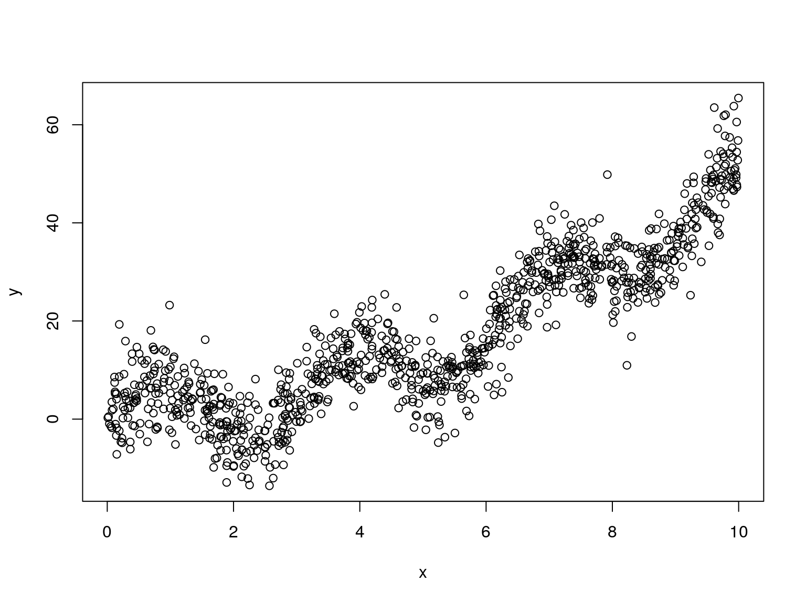

Rcpp and compboostC++ and an example that it worksFor some demos we will use sparse matrices. To create “meaningful” matrices we use compboostSplines, a GitHub package to create spline feature matrices:
devtools::install_github("schalkdaniel/compboostSplines")The compilation requires Rcpp, RcppArmadillo, and for windows users additionally Rtools.
You can also follow the presentation online.
Simulate data:
n.sim = 1000
x = sort(runif(n.sim, min = 0, max = 10))
y = 0.5 * x^2 + 7 * sin(2 * x) + rnorm(n.sim, 0, 5)
knots = createKnots(values = x, n_knots = 40, degree = 3)
plot(x, y)
basis.dense = createSplineBasis(values = x, degree = 3, knots = knots)
print(basis.dense[1:5, 1:10], digits = 4)
## [,1] [,2] [,3] [,4] [,5] [,6] [,7] [,8] [,9] [,10]
## [1,] 0.16667 0.6667 0.1667 0.000e+00 0 0 0 0 0 0
## [2,] 0.15772 0.6663 0.1759 1.007e-06 0 0 0 0 0 0
## [3,] 0.14752 0.6651 0.1874 1.056e-05 0 0 0 0 0 0
## [4,] 0.08777 0.6332 0.2779 1.188e-03 0 0 0 0 0 0
## [5,] 0.08744 0.6329 0.2785 1.207e-03 0 0 0 0 0 0
# Structure of dense matrix:
str(basis.dense)
## num [1:1000, 1:44] 0.1667 0.1577 0.1475 0.0878 0.0874 ...
# Object size:
object.size(basis.dense)
## 352200 byteslibrary(Matrix)
basis.sparse = createSparseSplineBasis(values = x, degree = 3,
knots = knots)
basis.sparse[1:5, 1:10]
## 5 x 10 sparse Matrix of class "dgCMatrix"
##
## [1,] 0.16666667 0.6666667 0.1666667 . . . . . . .
## [2,] 0.15772495 0.6663380 0.1759361 1.006938e-06 . . . . . .
## [3,] 0.14751809 0.6651091 0.1873622 1.055925e-05 . . . . . .
## [4,] 0.08776841 0.6331897 0.2778537 1.188178e-03 . . . . . .
## [5,] 0.08743755 0.6328543 0.2785010 1.207094e-03 . . . . . .
# Structure of sparse matrix:
str(basis.sparse)
## Formal class 'dgCMatrix' [package "Matrix"] with 6 slots
## ..@ i : int [1:3998] 0 1 2 3 4 5 6 7 8 9 ...
## ..@ p : int [1:45] 0 22 73 155 259 370 472 568 676 781 ...
## ..@ Dim : int [1:2] 1000 44
## ..@ Dimnames:List of 2
## .. ..$ : NULL
## .. ..$ : NULL
## ..@ x : num [1:3998] 0.1667 0.1577 0.1475 0.0878 0.0874 ...
## ..@ factors : list()
# Object sizes:
object.size(basis.sparse)
## 49576 bytesCompare different implementations by computing the ordinary least squares estimator: \[ \hat{\beta} = (X^TX)^{-1}X^Ty \]
To get an idea of the matrix multiplication not runtime of algorithms like computing the inverse, we calculate a \(K = (X^TX)^{-1}\) in advance.
As starter we compare matrix multiplication by using dense matrices from base and sparse matrices from the Matrix package:
K = solve(t(basis.dense) %*% basis.dense)
microbenchmark::microbenchmark(
"R dense" = K %*% t(basis.dense) %*% y,
"R sparse" = K %*% t(basis.sparse) %*% y
)
## Unit: microseconds
## expr min lq mean median uq max neval cld
## R dense 1188.624 1436.8835 2058.0830 1794.8300 2175.6205 8350.196 100 b
## R sparse 419.115 536.5425 859.8838 663.2205 749.6865 5737.716 100 an.sim = 10000
x = runif(n.sim, min = 0, max = 10)
y = 0.5 * x^2 + 7 * sin(2 * x) + rnorm(n.sim, 0, 5)
knots = createKnots(values = x, n_knots = 100, degree = 3)
basis.dense = createSplineBasis(values = x, degree = 3, knots = knots)
basis.sparse = createSparseSplineBasis(values = x, degree = 3, knots = knots)
object.size(basis.dense)
## 8320200 bytes
object.size(basis.sparse)
## 481816 bytes
K = solve(t(basis.dense) %*% basis.dense)
microbenchmark::microbenchmark(
"R dense" = K %*% t(basis.dense) %*% y,
"R sparse" = K %*% t(basis.sparse) %*% y
)
## Unit: milliseconds
## expr min lq mean median uq max neval cld
## R dense 54.46147 67.21445 99.15814 76.49406 96.22038 298.6240 100 b
## R sparse 10.64438 14.57499 29.03631 16.95734 21.43487 137.6534 100 aC++With Rcpp and RcppArmadillo we can define a sparse matrix multiplication using C++:
code.cpp = "
arma::vec sparseMatMulti (arma::sp_mat& X, arma::vec& y, arma::mat& K)
{
return K * X.t() * y;
}
"
Rcpp::cppFunction(code = code.cpp, depends = "RcppArmadillo")
# What happens now?C++Comparing R and C++ computations yields:
microbenchmark::microbenchmark(
"R dense" = K %*% t(basis.dense) %*% y,
"R sparse" = K %*% t(basis.sparse) %*% y,
"C++ sparse" = sparseMatMulti(basis.sparse, y, K)
)
## Unit: milliseconds
## expr min lq mean median uq max neval cld
## R dense 48.971830 63.027646 86.63644 72.290265 88.47790 261.11966 100 c
## R sparse 9.861651 13.015771 31.12596 15.665631 19.83016 156.57324 100 b
## C++ sparse 7.400958 8.748166 10.47567 9.871279 11.17412 33.85161 100 aLooks very promising, but we can do better!
Due to the CRC structure of armadillo sparse matrices we should avoid slicing rows of the sparse matrix. Therefore, we set the braces to force a computation of \(Xy\) first:
code1.cpp = "
arma::mat sparseMatMulti (arma::sp_mat& X, arma::vec& y, arma::mat& K)
{
return K * X * y;
}
"
code2.cpp = "
arma::mat sparseMatMultiSmart (arma::sp_mat& X, arma::vec& y,
arma::mat& K)
{
return K * (X * y);
}
"
Rcpp::cppFunction(code = code1.cpp, depends = "RcppArmadillo")
Rcpp::cppFunction(code = code2.cpp, depends = "RcppArmadillo")
# What happens now?Setting the braces differently and using the transposed directly instead of internal computation yields:
# Calculate transposed sparse matrix:
basis.sparse.t = t(createSparseSplineBasis(values = x, degree = 3,
knots = knots))
microbenchmark::microbenchmark(
"R dense" = K %*% t(basis.dense) %*% y,
"R sparse" = K %*% basis.sparse.t %*% y,
"C++ sparse" = sparseMatMulti(basis.sparse.t, y, K),
"C++ sparse smart" = sparseMatMultiSmart(basis.sparse.t, y, K)
)
## Unit: microseconds
## expr min lq mean median uq
## R dense 52046.846 73535.337 112037.5200 83295.9845 156453.5520
## R sparse 9718.171 12777.329 26055.0005 14984.6655 19849.9800
## C++ sparse 6643.154 8227.482 10184.0334 9404.7780 11275.8795
## C++ sparse smart 169.912 228.436 315.6089 287.7175 346.9975
## max neval cld
## 263783.109 100 c
## 157624.430 100 b
## 21959.712 100 a
## 2158.629 100 a